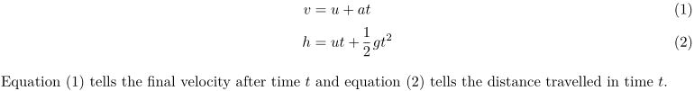
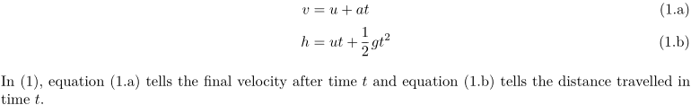
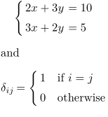
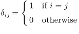
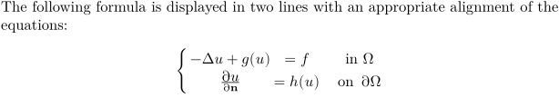
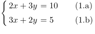

Contents
Basic Alignment with \startalign
-
\startformula\startalign \NC v \NC = u + at \NR \NC h \NC = ut + \frac12 gt^2 \NR \stopalign\stopformula
\NC stands for new column, \NR stands for new row.
Changing the number of columns
The above equations were aligned at =. Suppose you also want the + to align. Well, this is simple in context, simply specify the number of columns with \startalign
-
\startformula \startalign[n=3] \NC v \NC = u \NC + at \NR \NC h \NC = ut \NC + \frac12 gt^2 \NR \stopalign \stopformula
Equation numbering with \startplaceformula
Aligned equations can be numbered by using \startplaceformula (as usual), and by placing a tag after \NR
-
\setuplayout[scale=0.8,width=13cm] \startplaceformula \startformula \startalign \NC v \NC = u + at \NR[eq:v] \NC h \NC = ut + \frac12 gt^2 \NR[eq:h] \stopalign \stopformula \stopplaceformula Equation~(\in[eq:v]) tells the final velocity after time~$t$ and equation~(\in[eq:h]) tells the distance travelled in time~$t$.
- 
Sub-numbering with \startsubformulas
The numbering can be changed to a subformula style by encapsulating \startplaceformula with \startsubformulas :
-
\setuplayout[scale=0.8,width=13cm] \startsubformulas[eq:total] \startplaceformula \startformula \startalign \NC v \NC = u + at \NR[eq:v] \NC h \NC = ut + \frac12 gt^2 \NR[eq:h] \stopalign \stopformula \stopplaceformula \stopsubformulas In~(\in[eq:total]), equation~(\in[eq:v]) tells the final velocity after time~$t$ and equation (\in[eq:h]) tells the distance travelled in time~$t$.
- 
Specifying and defining alignment with \definemathalignment
If you want more control over the formatting, and want the middle column to be center aligned, you can do that by
-
\startformula \startalign[n=3,align={1:right,2:middle,3:left}] \NC v \NC = u \NC+ at \NR \NC h \NC= ut \NC+ \frac12 gt^2 \NR \stopalign \stopformula
This mechanism allows fancier alignments like
-
\startformula \startalign[n=4,align={1:right,2:right,3:middle,4:left}] \NC \text{We have} \quad \NC v \NC = u \NC+ at \NR \NC \text{and} \quad \NC h \NC= ut \NC+ \frac12 gt^2 \NR \stopalign \stopformula
These kind of new alignment can be defined using \definemathalignment.
-
\definemathalignment [demom] [n=4,align={1:right,2:right,3:middle,4:left}] \startformula \startdemom \NC \text{We have} \quad \NC v \NC = u \NC+ at \NR \NC \text{and} \quad \NC h \NC= ut \NC+ \frac12 gt^2 \NR \stopdemom \stopformula
-

A second example, to emulate gather environment of amsmath, we can use
-
\definemathalignment [gather] [n=1,align={1:middle}] \startformula \startgather \NC ax^2 + bx + c = 0 \NR \NC \text{roots} = \frac{ -b \pm \sqrt{b^2 - 4ac}}{2a} \NR \stopgather \stopformula
Cases
with \startmathcases (two columns)
Context provides a \startmathcases \stopmathcases pair to make it easy to get cases. The cases environment consists of two columns, separated by \NC. Each line must end with a \NR.
-
\startformula \startcases[align={right,left},distance=3pt] \NC 2x + 3y \NC = 10 \NR \NC 3x + 2y \NC = 5 \NR \stopcases \stopformula and \startformula \delta_{ij} = \startmathcases \NC 1 \NC \text{if } i = j \NR \NC 0 \NC \text{otherwise} \NR \stopmathcases \stopformula
gives
- 
The second column is by default in math mode. To typeset the second column in text mode, use \TC:
-
\startformula \delta_{ij} = \startmathcases \NC 1 \TC if \m{i = j} \NR \NC 0 \TC otherwise \NR \stopmathcases \stopformula
gives
- 
with \definemathmatrix
One of the powerful structures in displaying mathematical formulas is the possibility of defining custom maths alignment. For instance the following definition
-
\definemathmatrix [alignedcases] % creates 2 new commands \startalignedcases \stopalignedcases [align={right,left,left}, distance=3pt, left={\left\{}, right={\right.}, style=\displaystyle] The following formula is displayed in two lines with an appropriate alignment of the equations: \startformula \startalignedcases \NC -\Delta u + g(u) \NC{} = f \NC \quad\mbox{in } \Omega\NR \NC {\partial u \over \partial {\bf n} } \NC{} = h(u) \NC \quad\mbox{on } \partial\Omega \NR \stopalignedcases \stopformula
- 
Numbering cases with \startplaceformula plus \startsubformulas
As you may expect:
-
\startsubformulas \startplaceformula \startformula \startcases[align={right,left},distance=3pt] \NC 2x + 3y \NC = 10 \NR[eq:a] \NC 3x + 2y \NC = 5 \NR[eq:b] \stopcases \stopformula \stopplaceformula \stopsubformulas
gives
- 